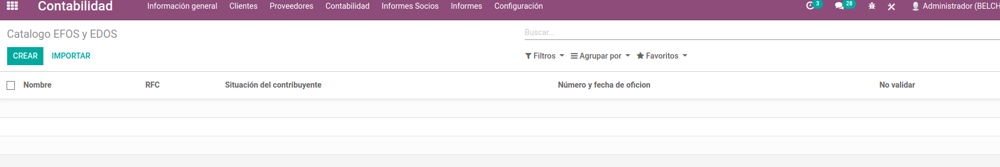
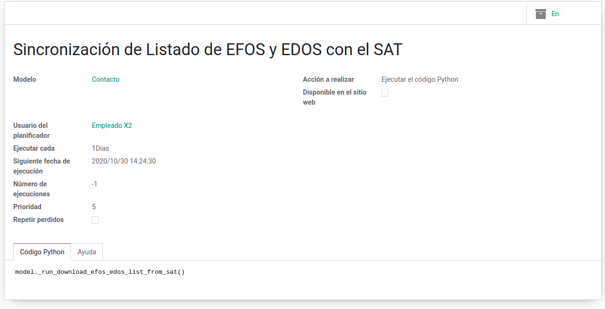
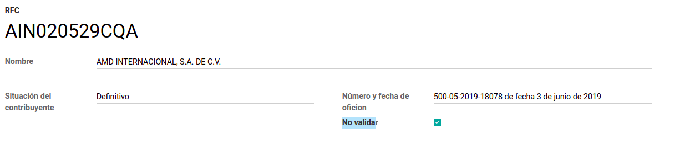
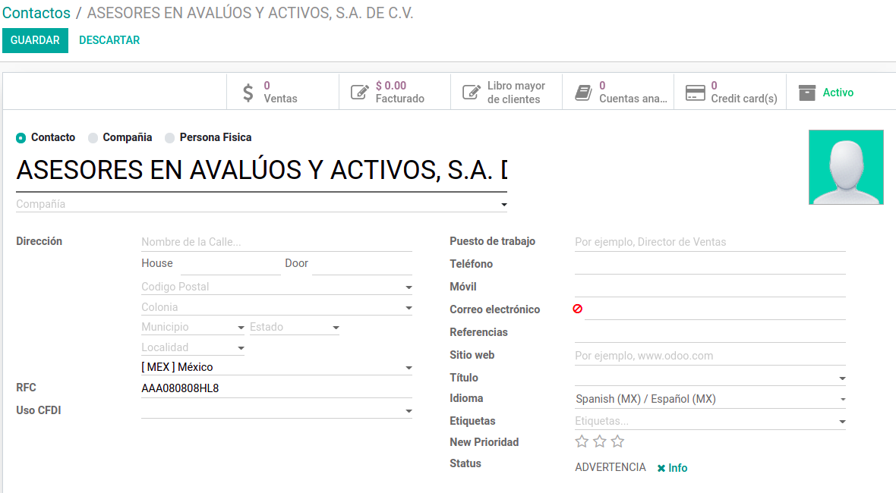
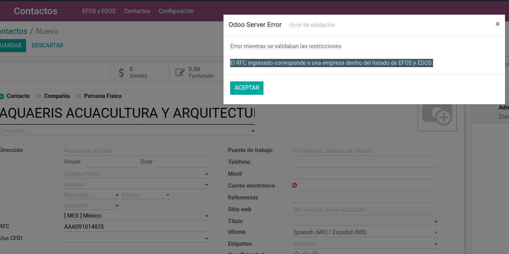
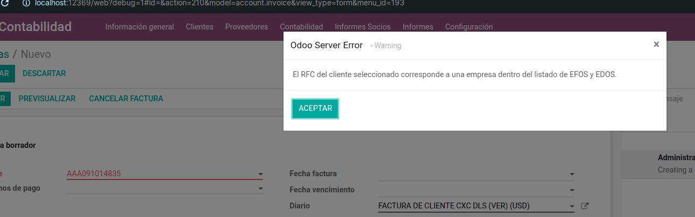
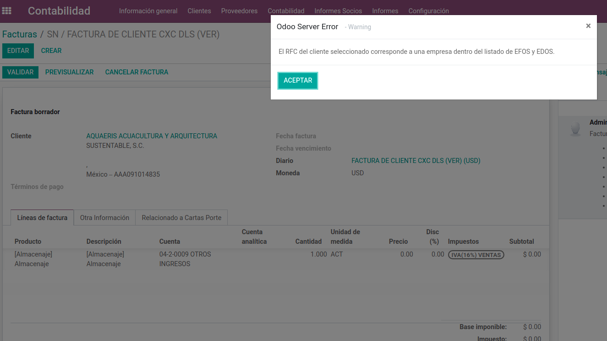

Es modulo proporciona un listado de ayudaría a gestionar si dentro del catálogo de clientes y proveedores, existe alguna empresas fraudulentas, con base al listado proporcionado por el SAT.
El Catalogo de EFOS y EDOS tambien es accesible desde el menu de Contactos.






